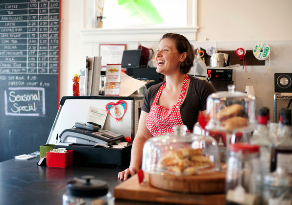

The WildFlour Story
Lauren Mitterer received her degree in Baking & Pastry from the Culinary Institute of America in Hyde Park, New York in 2004.
She began her culinary career as an Intern at Tavern on the Green in NYC and while a student at the CIA completed an Externship in Baking & Pastry at Larkspur In Vail, Colorado.
Upon graduating from the CIA in 2004, Lauren moved to Charleston, South Carolina to accept a position as Executive Pastry Chef at Red Drum Gastropub where she quickly became a "rising star" in Charleston's culinary scene.
In 2009, Lauren left Red Drum Gastropub to pursue her dream of creating deconstructed yet elegant versions of comfort desserts, satisfying that unique craving of sweet and salty. Providing Charleston with her famous double chocolate cookies, sweet & savory scones, and legendary "Sticky Bun Sunday," WildFlour Pastry quickly became a favorite of the King Street neighborhood locals and those seeking an extraordinary dessert or specialty cake for their special occasions. A graduate of UVA with a degree in Studio Art, Lauren flexes her artistic muscles by creating gravity defying cakes designed with minute attention to detail replicating designs satisfying all the senses.
With a passion for detail in visual design and flavor palates, Lauren shares her love of the unexpected in the comfort of WildFlour Pastry - out of the box pastries & desserts.